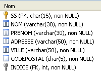
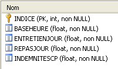
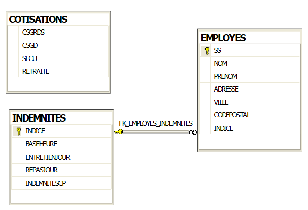

3. O Estudo de Caso
Pretendemos desenvolver uma aplicação .NET que permita ao utilizador simular cálculos de folhas de pagamento para prestadores de cuidados infantis na associação «Maison de la petite enfance» de um município. Iremos centrar-nos tanto na organização do código .NET da aplicação como no próprio código.
3.1. A base de dados
Os dados estáticos necessários para gerar o recibo de vencimento estão armazenados numa base de dados SQL Server Express denominada dbpam (pam = Paie Assistante Maternelle). Esta base de dados tem um administrador denominado sa com a palavra-passe msde.
 |
A base de dados tem três tabelas, EMPLOYEES, CONTRIBUTIONS e ALLOWANCES, com a seguinte estrutura:
Table EMPLOYES : rassemble des informations sur les différentes assistantes maternelles
Estrutura:
 |
|
O seu conteúdo poderia ser o seguinte:

Table COTISATIONS : rassemble les taux des cotisations sociales prélevées sur le salaire
Estrutura:
 |
O seu conteúdo poderia ser o seguinte:
As taxas de contribuição para a segurança social são independentes do trabalhador. A tabela anterior tem apenas uma linha.
Table INDEMNITES : rassemble les différentes indemnités dépendant de l'indice de l'employé
 |
|
O seu conteúdo poderia ser o seguinte:

Note-se que os subsídios podem variar de um prestador de cuidados infantis para outro. Estão associados a um prestador de cuidados infantis específico através da tabela salarial desse prestador. Assim, a Sra. Marie Jouveinal, que tem uma tabela salarial de 2 (tabela EMPLOYEES), tem um salário por hora de 2,1 euros (tabela INDEMNITES).
As relações entre as três tabelas são as seguintes:
 |
Existe uma relação de chave estrangeira entre a coluna EMPLOYEES(INDEX) e a coluna ALLOWANCES(INDEX).
A base de dados [dbpam] criada desta forma gera dois ficheiros na pasta do SQL Server Express:
 |
Os ficheiros [dbpam.mdf, dbpam_log.ldf] podem ser transferidos para outro computador e ligados novamente ao sistema de gestão de bases de dados SQL Server Express desse computador. Veja como fazê-lo:
- Os ficheiros da base de dados [dbpam] são copiados para uma pasta
 |
- Inicie o SQL Server Express
- Utilizando o cliente SQL Server Management Studio Express, anexe o ficheiro [dbpam.mdf] à base de dados:
 |
 |
- Clique com o botão direito do rato em [Bases de dados] / Anexar
- Selecione o ficheiro [dbpam.mdf] utilizando o botão [Adicionar] (não mostrado)
- O ficheiro anexado irá criar uma base de dados que ainda não deve existir. Aqui, no campo [Anexar como], nomeámos a nova base de dados [dbpam2].
- Pode ver a nova base de dados e as suas tabelas
Esta técnica para anexar uma base de dados é útil para transferir uma base de dados de um computador para outro, e iremos utilizá-la ocasionalmente aqui.
3.2. Método de cálculo do salário de uma ama
Apresentamos agora o método de cálculo do salário mensal de uma ama. Como exemplo, utilizaremos o salário da Sra. Marie Jouveinal, que trabalhou 150 horas ao longo de 20 dias durante o período de pagamento.
São tidos em conta os seguintes fatores: | | |
O salário base do prestador de cuidados infantis é calculado utilizando a seguinte fórmula: | ||
É necessário deduzir várias contribuições para a segurança social deste salário base: | | |
Total das contribuições para a segurança social: | | |
Além disso, a prestadora de cuidados infantis tem direito a um subsídio de subsistência e a um subsídio de refeição por cada dia trabalhado. Como tal, recebe os seguintes subsídios: | ||
No final, o salário líquido a pagar à ama é o seguinte: |
3.3. Lembretes sobre o ADO.NET
A aplicação de cálculo de salários requer informações da base de dados [dbpam]. A sua arquitetura será a seguinte:
 |
- Em [1], o utilizador faz um pedido
- Em [2], a aplicação de folha de pagamento processa-a.
- Pode então necessitar de dados da base de dados. Em seguida, envia uma consulta ao fornecedor ADO.NET do SGBD que está a ser utilizado [4].
- O provedor acede à base de dados [5] e devolve os resultados ao provedor ADO.NET, que, por sua vez, os transmite de volta à aplicação
- A aplicação processa estes resultados e gera uma resposta [5] para o utilizador
Vamos agora analisar as principais interfaces fornecidas por um fornecedor ADO.NET aos seus clientes [3].
No modo conectado, a aplicação:
- abre uma ligação à fonte de dados
- trabalha com a fonte de dados no modo de leitura/gravação
- encerra a ligação
Três interfaces ADO.NET estão principalmente envolvidas nessas operações:
- IDbConnection, que encapsula as propriedades e métodos da ligação.
- IDbCommand, que encapsula as propriedades e métodos do comando SQL executado.
- IDataReader, que encapsula as propriedades e métodos do resultado de uma instrução SQL SELECT.
A interface IDbConnection
é utilizada para gerir a ligação à base de dados. Entre os métodos (M) e propriedades (P) desta interface encontram-se os seguintes:
Nome | Tipo | Função |
P | Cadeia de ligação à base de dados. Especifica todos os parâmetros necessários para estabelecer uma ligação com uma base de dados específica. | |
M | Abre a ligação à base de dados definida por ConnectionString | |
M | Encerra a ligação | |
M | inicia uma transação. | |
P | Estado da ligação: ConnectionState.Closed, ConnectionState.Open, ConnectionState.Connecting, ConnectionState.Executing, ConnectionState.Fetching, ConnectionState.Broken |
Se Connection for uma classe que implementa a interface IDbConnection, a ligação pode ser aberta da seguinte forma:
A interface IDbCommand
é utilizada para executar uma instrução SQL ou um procedimento armazenado. Entre os métodos M e propriedades P desta interface encontram-se os seguintes:
Nome | Tipo | Função |
P | especifica o que executar - obtém os seus valores de uma enumeração: - CommandType.Text: executa a instrução SQL definida na propriedade CommandText. Este é o valor predefinido. - CommandType.StoredProcedure: executa um procedimento armazenado na base de dados | |
P | - o texto da instrução SQL a executar se CommandType= CommandType.Text - o nome da procedimento armazenado a executar se CommandType= CommandType.StoredProcedure | |
P | a ligação IDbConnection a utilizar para executar a instrução SQL | |
P | a transação IDbTransaction na qual a instrução SQL deve ser executada | |
P | A lista de parâmetros para uma instrução SQL parametrizada. A instrução `update articles set price=price*1.1 where id=@id` tem o parâmetro `@id`. | |
M | Para executar uma instrução SQL SELECT. Isto devolve um objeto IDataReader que representa o resultado da instrução SELECT. | |
M | para executar uma instrução SQL Update, Insert ou Delete. É devolvido o número de linhas afetadas pela operação (atualizadas, inseridas ou eliminadas). | |
M | para executar uma instrução SQL Select que retorna um único resultado, como: select count(*) from articles. | |
M | para criar os parâmetros IDbParameter de uma instrução SQL parametrizada. | |
M | permite-lhe otimizar a execução de uma consulta parametrizada quando esta é executada várias vezes com parâmetros diferentes. |
Se Command for uma classe que implementa a interface IDbCommand, a execução de uma instrução SQL sem uma transação assumirá a seguinte forma:
A interface IDataReader
Utilizada para encapsular os resultados de uma instrução SQL Select. Um objeto IDataReader representa uma tabela com linhas e colunas, que são processadas sequencialmente: primeiro a primeira linha, depois a segunda e assim por diante. Entre os métodos (M) e propriedades (P) desta interface encontram-se os seguintes:
Nome | Tipo | Função |
P | O número de colunas na tabela IDataReader | |
M | GetName(i) devolve o nome da coluna i na tabela do IDataReader. | |
P | Item[i] representa a coluna número i da linha atual na tabela IDataReader. | |
M | Passa para a linha seguinte na tabela IDataReader. Devolve True se a linha tiver sido lida com sucesso, False caso contrário. | |
M | Fecha a tabela IDataReader. | |
M | GetBoolean(i): devolve o valor booleano da coluna i na linha atual da tabela IDataReader. Outros métodos semelhantes incluem: GetDateTime, GetDecimal, GetDouble, GetFloat, GetInt16, GetInt32, GetInt64, GetString. | |
M | Getvalue(i): devolve o valor da coluna i na linha atual da tabela IDataReader como um tipo de objeto. | |
M | IsDBNull(i) retorna True se a coluna i da linha atual na tabela IDataReader não tiver valor, o que é representado pelo valor SQL NULL. |
A utilização de um objeto IDataReader é frequentemente semelhante ao seguinte: